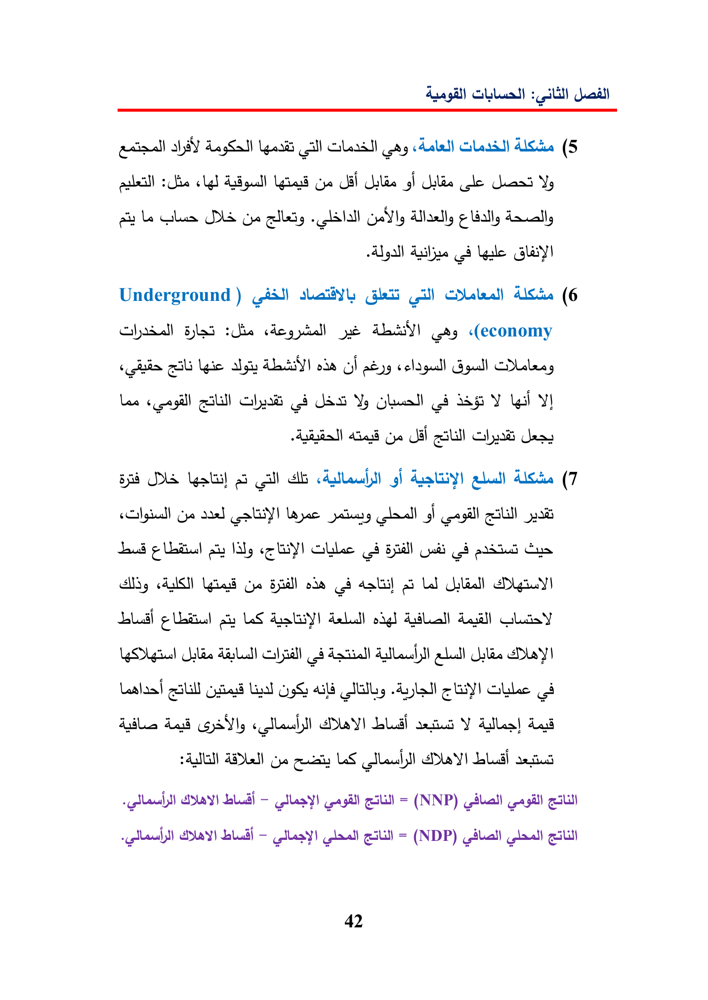

Le(5cg!ilsliesiraatYyaigLeDIS(yelady¢WallyLgeGley!Underground)Gti(il)(6Blasiheje«(economygicodaUlaeyyLeeGallGhaiJASYlel58DISallelclad)(7Gyesfcogilati¢NayeeGuidCaeGyoSillode(4dal)ooLdLad)¢oiLSibeStilltedWY)(8AilesdadLidltusYAlles!dadPAN)ADLGeeesLSatesBday)—Gil)=(NNP)WY—Gili)=(NDP)42